| Gods & Glory | ||
|---|---|---|
| Понравилось | Не понравилось | Зацепило |
|
Возможность перераспределения навыков у героя. Боги. Разнообразие в армии. Всегда есть чем заняться, не всё завязано на таймеры (Гринд шахт, подземелий) Возможность одновременно пользоваться зданием и улучшать его Вокруг все счастливые и довольные. Ни одной какахи в вашу сторону. 100 бесплатных ускорителей. Правосланый донат, (относительно) честная ф2п система (есть возможность играть без него) Замки. То есть скины. Что много разных красивых и с бонусами Сравниваю с творчеством MZ. Скриншот ниже. (первая покупка 5$, вторая 100$, все последующие - 1000$). 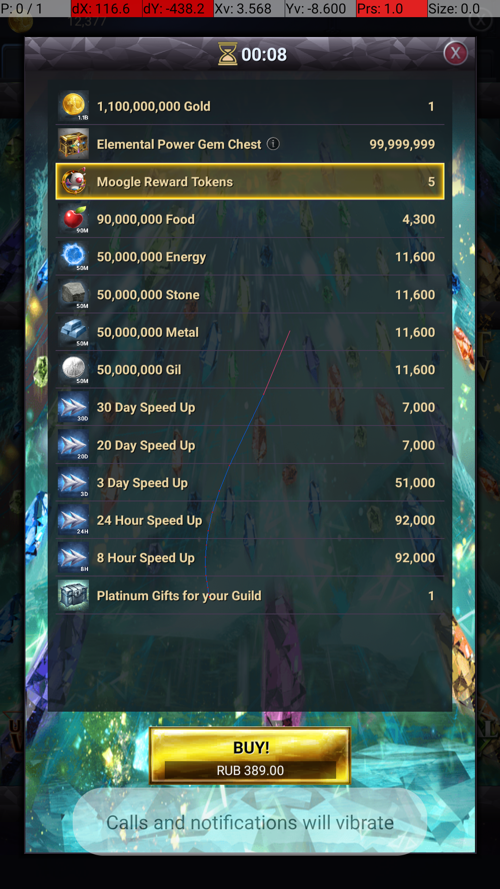 |
Мало народу (молодой сервер, на котором я сейчас) Линейность развития. Из ветвлений только боги. Чат красивый и функциональный, НО: скролл очень портит впечатление, очень утомительно листать вверх Есть замечания, по UX/UI в основном. Об этом ниже. Но это именно если придираться, в чём моя задача и состоит ;-) |
Грамотный цикл ресурсов. Всё утилизируется. Особенно поток данж-кузница-порт для обычных (редкость) предметов Мощная социальная составляющая, "Мои интересы", "Обо мне" в профиле. Прямо чат знакомств. Туториал, точнее его озвучка (играю на английском, остальные пока не пробовал) Разделение аудитории. Отдельные сервера для СНГ. Не помню такого у других. Так же возможность (при желании) играть с китайцами (для меня актуально, учу Китайский). Ну или с кем захочешь. |
Большинство добывающих зданий в городе чувствуются ненужными.
Видимо это альтернативный способ для пацифистов
В итоге строятся по 1 штучке, просто потому, что на них завязан лок.
По крайней мере на мелких уровнях. Весь город застроен домами, 2 слота вообще свободны потому,
что дом туда не поставить, а остальное без надобности. Так как в них нет модулей, ситуация видимо не изменится.
Большинство (все?) ресурсы добываются из шахт при прокачке героя.
Ввиду доступности шахт (в альянсе), которые всё равно НЕОБХОДИМО посещать героем,
для поддержания его в адекватной уровню форме.
При условии перерасхода войск, золотая имеет смысл, но остальные 2 просто не нужны.
Сундук в данжах даёт 25к опыта всегда. (после 6? первых)
Это не очень актуально на сверхвысоких уровнях героя и генералов.
Также ломает прогресс на мелких (автокликером за час на первом мобе без потерь)
Получаешь 5, 10, 25к опыта герою, что даёт сразу несколько уровней.
(Не то чтобы это правда сильно мешало)
Предлагаю привязать его к прогрессу в подземельях.
В зависимости от максимально открытого данжа. Или их суммы.
К примеру сумма получаемых очков прогресса для сундука с каждого боя * константу.
Или просто сумма уже полученного опыта.
Все играют танкомагом с 20 ловкости.
Требует уточнения. Возможно нужен ребаланс перков или экипировки
Есть возможность окружить свой замок твинками, тогда вражеский лагерь не пройдёт.
Пожелания от игроков:
Добавить кнопку отмены крафта, с возвратом части ресурсов. (оригинальное предложение - 75%)
Предложения:
Интерфейс:
Добавить лог сообщений, или хотя бы чтобы дольше висели.
Их просто не видно (Уведомления, к примеру о полученных юнитах)
Сортировка альянса по онлайну.
Видел сообщение про вип и изменение скорости исследования. Обидно, что не было подобного, когда начинал постройку цитадели 10 (без вип). Прочитал описание, сразу активировал вип - таймер не изменился. Осадок остался.
Можно добавить шкалу прогресса для крафта отмеченных предметов в альянсе.
Хотя бы в виде: завершение крафта в %timestamp%.
Ввести очередь постройки (зданий, юнитов...)
В бесплатной версии (не должно никак повлиять на экономику и монетизацию) -
просто план, в котором всё равно нужно нажимать вручную.
Добавить возможность автоматического переключения за донат (vip x+ или godlike)
Добавить автоматичесое поддержание определённого набора армии.
(Кнопка: заказать постройку юнитов, по результам боя, например.) Изменяемая очередь найма в пределах одного барака.
Добавить описание некоторых элементов. Совсем неочевидно (для новых игроков),
Пример: кнопка "Я помогу" в альянсе. Каждый (каждый второй? третий?) новенький
постоянно отмечает все. Я кстати не был исключением :D.
Было бы прикольно анимировать разговор воительницы (в туториале).
Наша хоть и говорит, но анимация всё равно статична. Ни у кого нет, круто, дорого, просто.
Совсем не обязательно синхронизацию губ с текстом, просто чтобы во время пауз молчала
Производительность:
Очень быстро выгружается из памяти, (около 15 секунд?)
Позвонили - бой сбрасывается и подобное. На мой взгляд портит UX.
Оптимальное время жизни - 2-3 минуты
Баги:
При игре на эмуляторе (Bluestacks) не отображается вводимый текст.
Неизвестно, правда, ваша это проблема или самих Bluestacks.
| Gods & Glory | ||
|---|---|---|
| 1 | 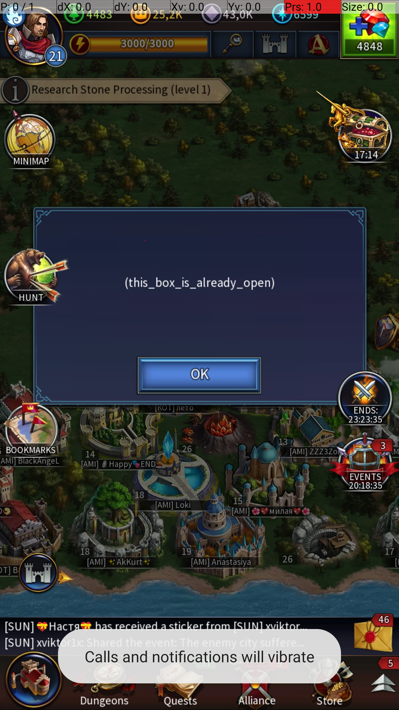 | Странный текст ошибок. Видел похожее на ютубе, в другом контексте. |
| 2 | 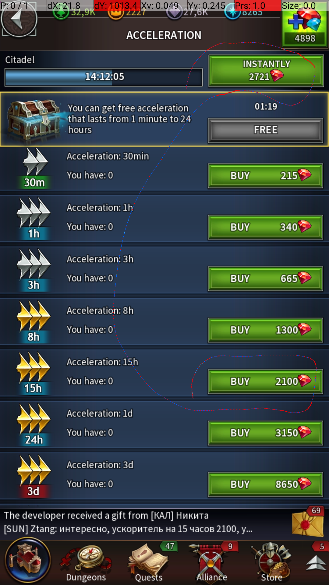 | Стоимость ускорения в кристаллах неадекватна стоимости покупки ускорителей. 14 часов 12 минут 5
секунд ускорения стоит 2721 кристалла, в то время как покупка ускорителя на 15 часов обойдётся
всего в 2100. Также не очень радует поведение на последних секундах постройки. Пример: вип 5, остаётся 10 минут 2 секунды. Стоимость считается как за 10 минут, при том, что фактически требуется ускорить всего на 2 секунды. |
| 3 | 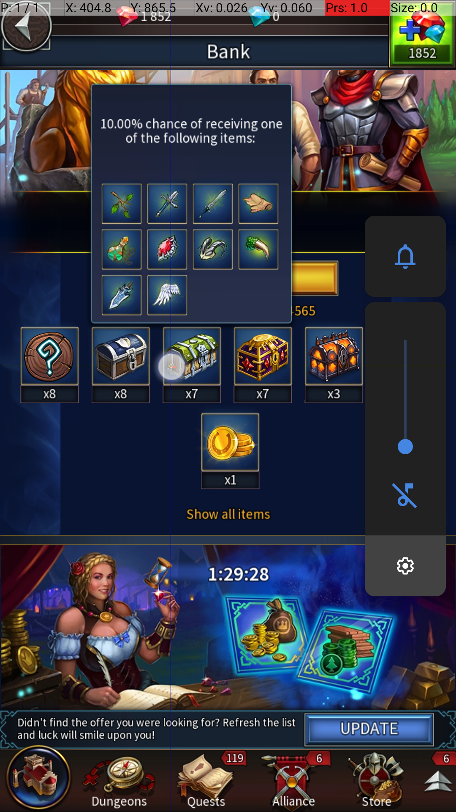 |
Названия:Стоит добавить название сундука (Сундук с обычными материалами) |
| 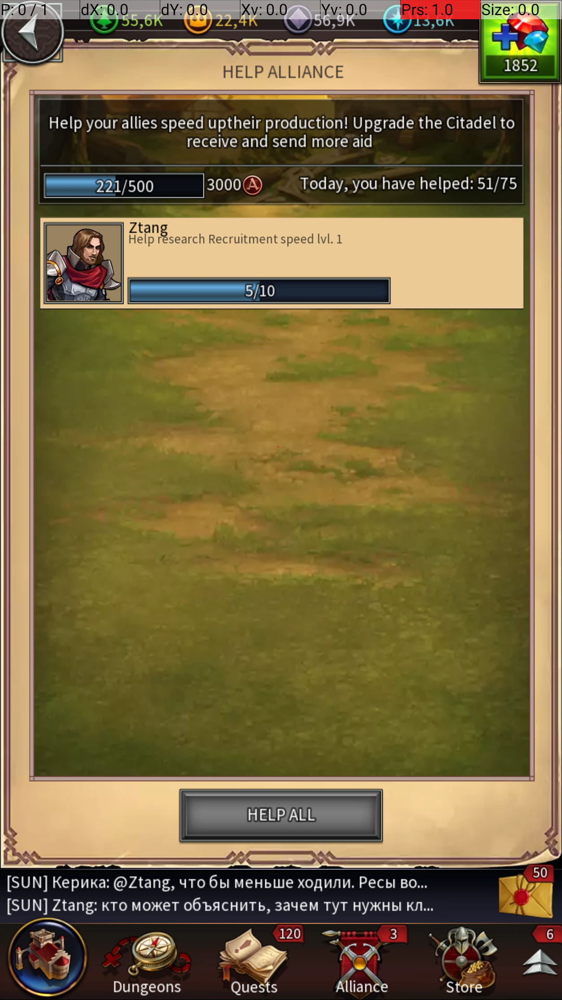 | Угадайте, какой именно юнит улучшается? И это при том, что почти всё рамка свободна. Ну и добавить отступ. | |
| 4 | 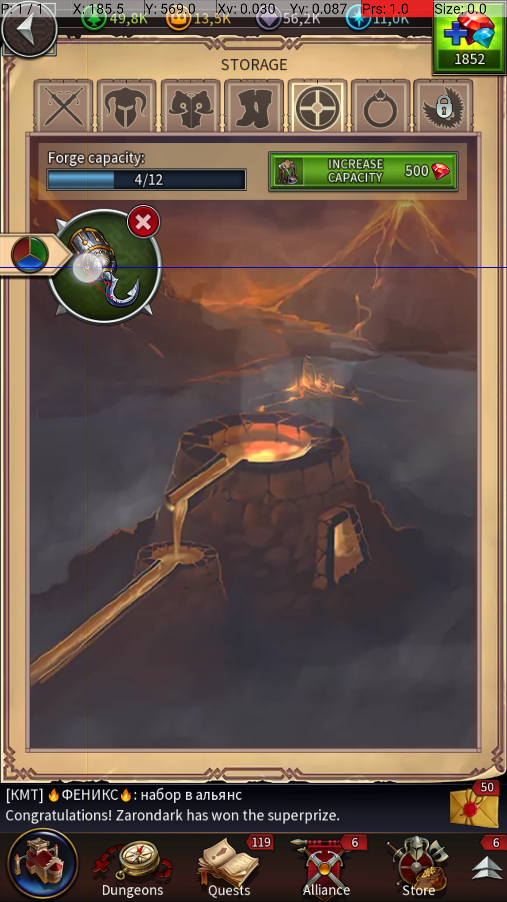 | Проблемы с перекрытием иконок. Пример: вот, в кузнице, первый предмет, если над ним висит иконка фильтра, при нажатии не показывает свойства предмета. Вообще ничего не показывает. А должен. |
| 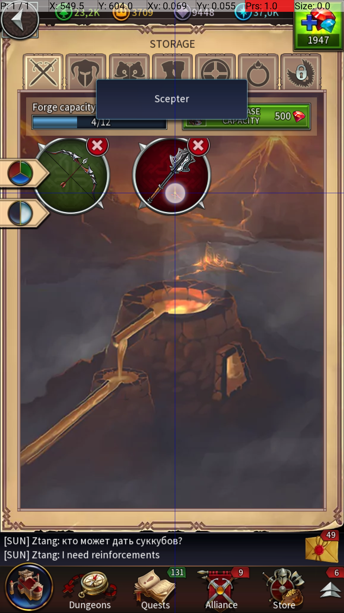 | Вот как выглядит, когда больше одного. Описание есть, правда... Из него только ясно, что эта палка называется Scepter. Как понять, стоит ли ее выкидывать? | |
| 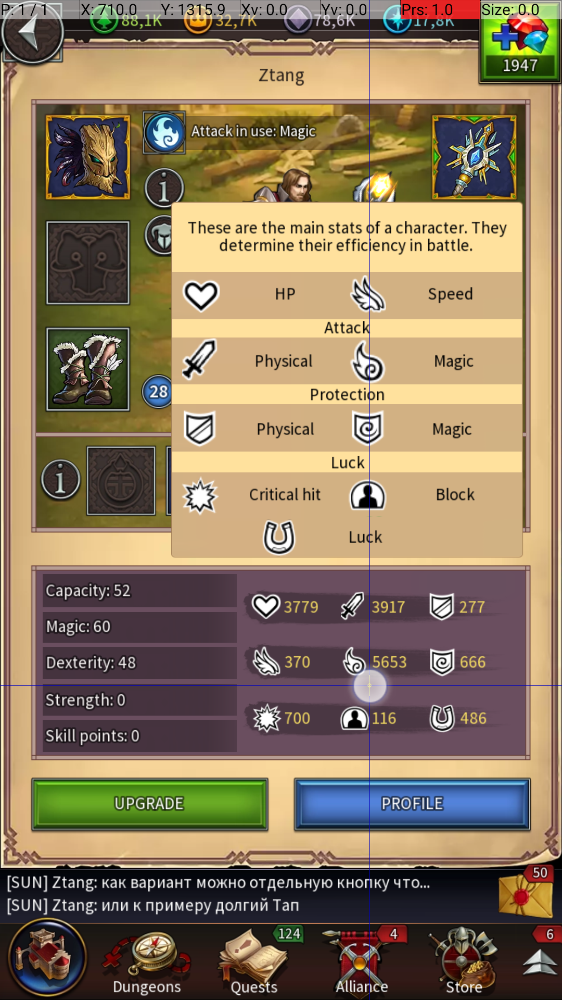 |
Прекрасные иконки. Что они означают? В частности, что делает Luck? Block? Не нужно формулы, просто описание. Возможно стоит добавить табличку, наподобие той, что здесь. |
|
| 5 | 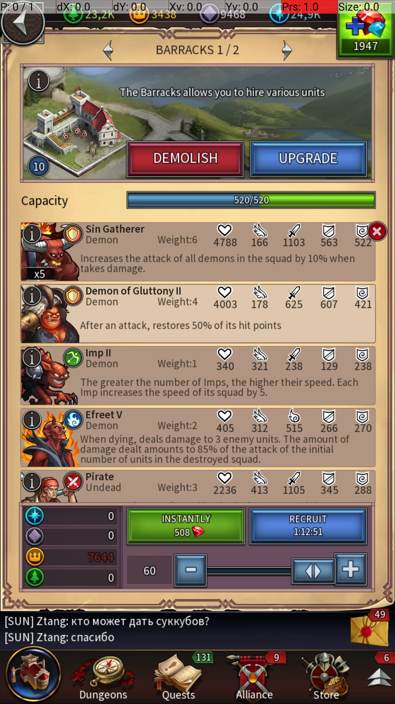 | Дефолтный найм. Пытается нанять максимум юнитов, даже если не хватает золота. |
| 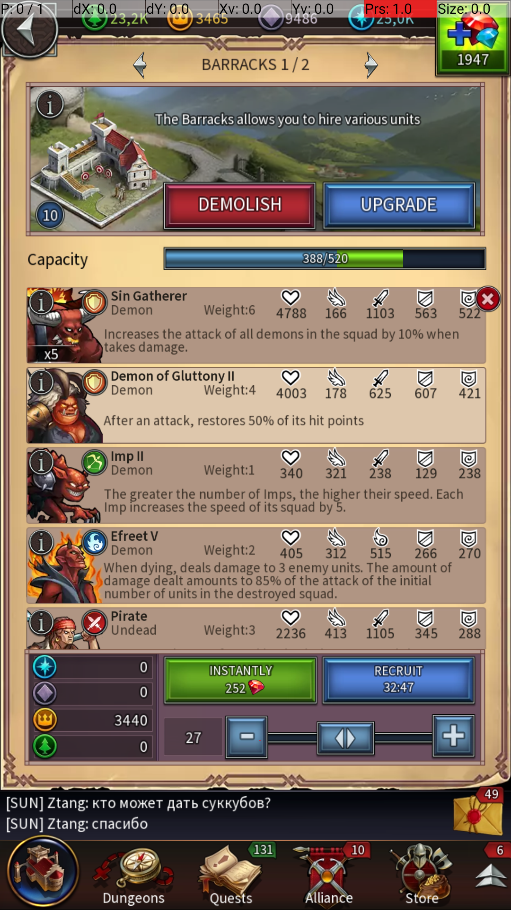 | Предлагаю сделать найм максимума доступных. Кнопка купить золото на экране уже есть. | |
| 6 | 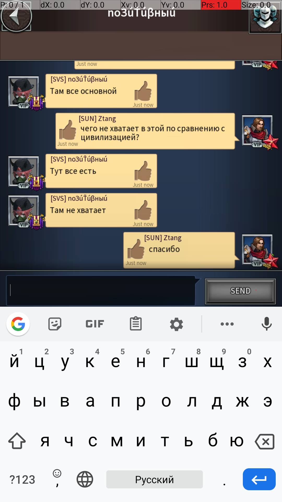 | Тем не менее, игрокам нравится. |
| 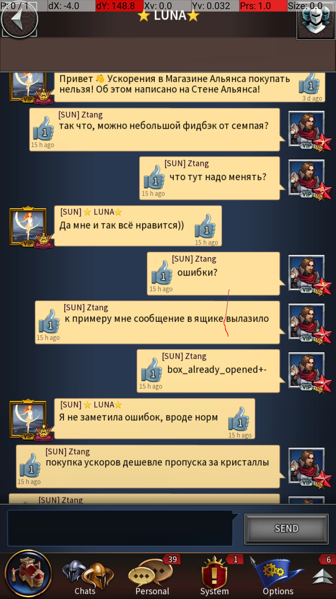 | ||
| 7 | 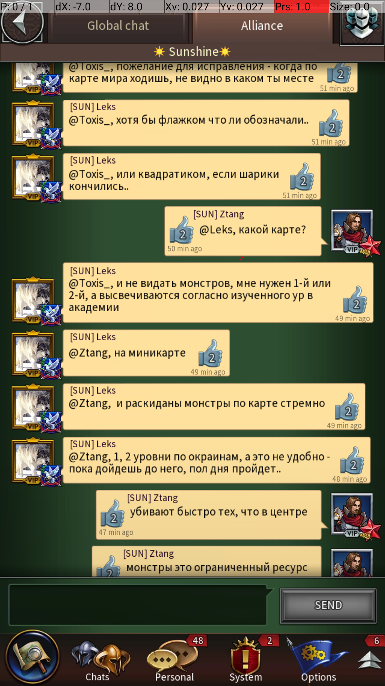 | Замечания местных по поводу миникарты |
| 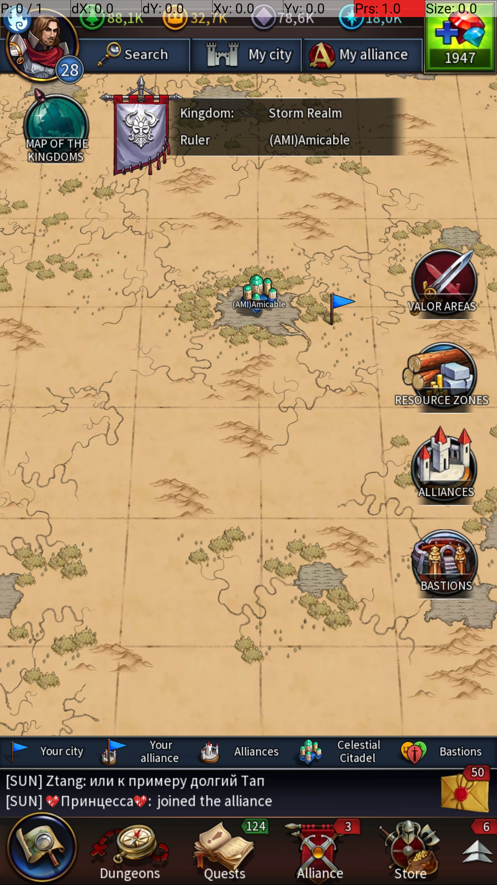 | О чём идет речь: | |
| 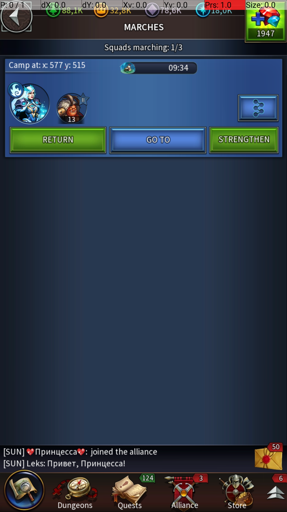 | Где это на карте? Предлагается добавить возможность перехода к произвольной точке на миникарте путём долгого на неё нажатия. Так же стоит рассмотреть возможность добавления кнопки "Показать на миникарте" к меню лагеря. |
|
| 8 | 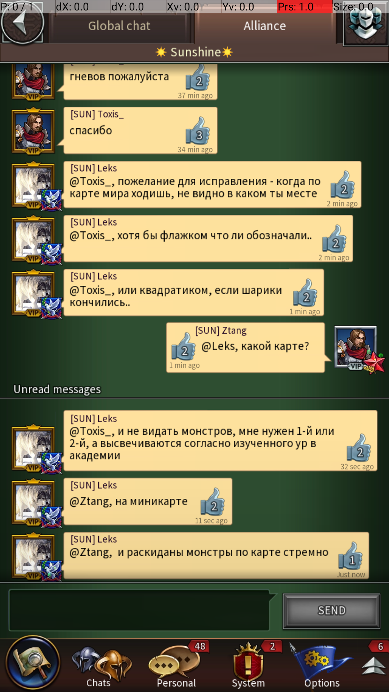 | Замечания местных по поводу монстров |